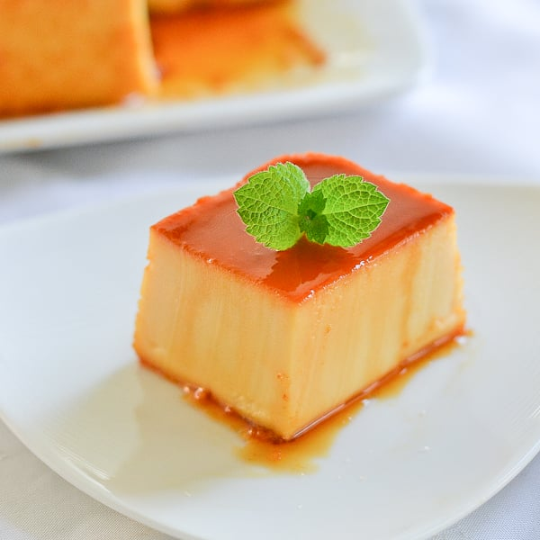
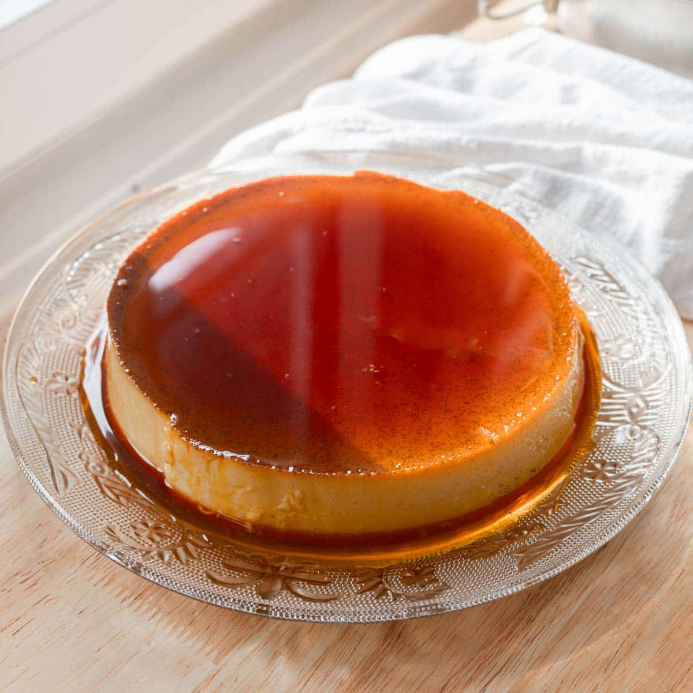
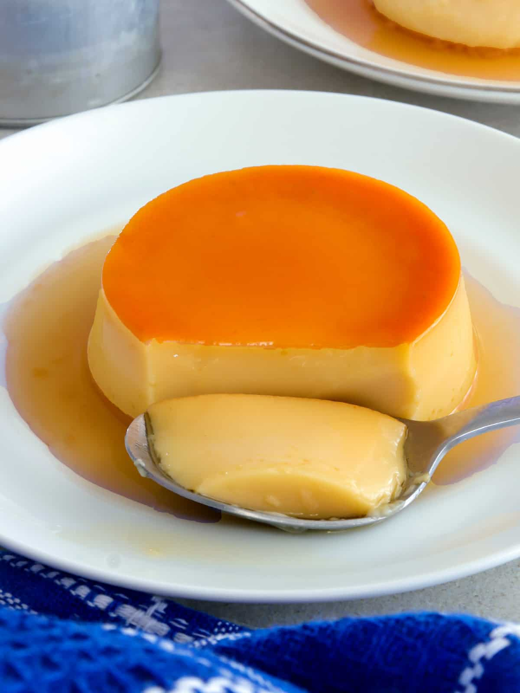

letche Flan





History
Ang Leche Flan ay isang classic dessert na nagmula sa Europe, partikular sa Spain at France, kung saan ito ay kilala bilang crème caramel. Dinala ito sa Pilipinas noong panahon ng Spanish colonization of the Philippines, at kalaunan ay nagkaroon ng Filipino version na mas rich at mas dense. Gumagamit ito ng mas maraming egg yolks at condensed milk, kaya mas creamy at mas matamis kumpara sa original. Sa paglipas ng panahon, naging staple ito sa mga handaan at espesyal na okasyon, simbolo ng celebration at kasiyahan sa bawat pamilya.
Ingredients & Notes
Egg yolks
Condensed milk
Evaporated milk
Sugar
Vanilla extract
Price
₱5